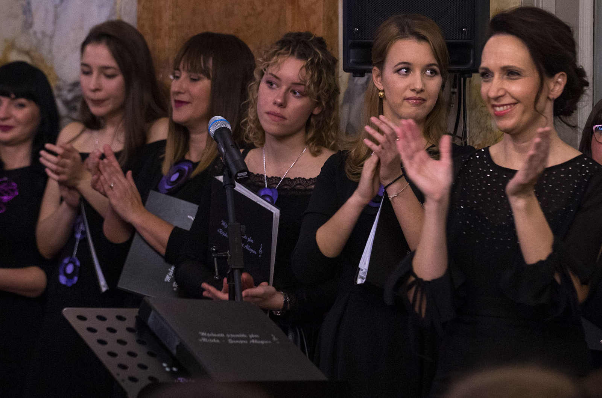
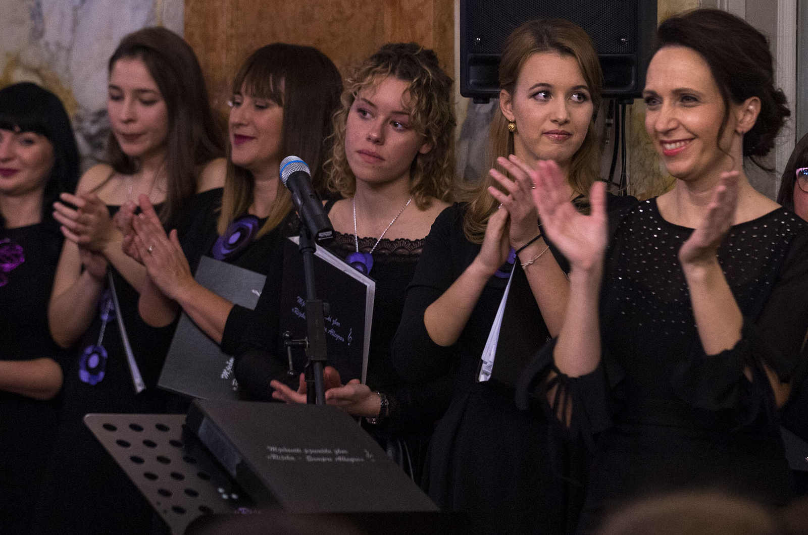
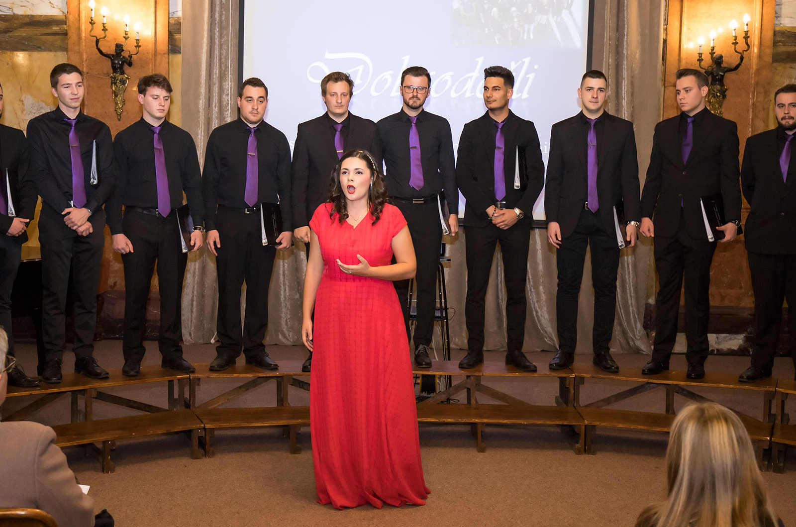
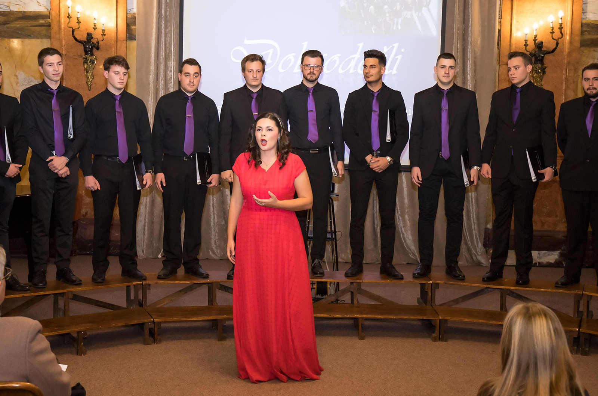

Musica Sacra - Pazin
Listopad 2019.
Listopad 2019.
Musica Sacra - Rovinj
Širok i raznolik zborski repertoar
Širok i raznolik zborski repertoar

Musica Sacra - Rovinj
Zajednički nastup sa prijateljima zborom Roženice iz Pazina
Zajednički nastup sa prijateljima zborom Roženice iz Pazina
Guvernerova palača u Rijeci
Mjesto slavlja obljetničkih koncerata
Mjesto slavlja obljetničkih koncerata

Šibenik - tvrđava Sv.Mihovila
Zajednička izvedba Carmine Burane sa ŠPD "Kolo" i Simfonijskim puhačkim orkestrom Hrvatske vojske
Zajednička izvedba Carmine Burane sa ŠPD "Kolo" i Simfonijskim puhačkim orkestrom Hrvatske vojske

Šibenik - tvrđava Sv.Mihovila
Maestra i dvanaest mušketira
Maestra i dvanaest mušketira

Pijanist Mateo Žmak
Prijatelj i korepetitor zbora
Prijatelj i korepetitor zbora

Putujemo i stvaramo nova prijateljstva
S radošću se sjetimo zajedničkih trenutaka!
S radošću se sjetimo zajedničkih trenutaka!

Čekamo Vas!
Pridružite se našoj Sempre Allegro obitelji
Pridružite se našoj Sempre Allegro obitelji
O NAMA
Obožavamo pjevati, družiti se i putovati
MJEŠOVITI PJEVAČKI ZBOR “RIJEKA – SEMPRE ALLEGRO“ osnovan je na sv. Ceciliju 22.studenog 2014. godine s namjerom okupljanja zaljubljenika u glazbu i zborsko pjevanje. Dirigentica i osnivačica zbora je Helga Dukarić Dangubić, profesor savjetnik i zborovođa, Maestra mentorica Hrvatske udruge zborovođa.
Zbor je u kratkom vremenu svog postojanja ostvario čak deset međunarodnih nastupa s visokim rezultatima. Svoje prvo međunarodno uspješno predstavljanje Zbor je imao 31. svibnja 2015. na festivalu FAKS u Rovinju.
Ostvario je kvalitetnu suradnju s HGD "Zvijezda Danica" iz Kraljevice, MPZ "Ina" iz Zagreba, GMH "Vardar" iz Skopja, Coro „Giovani Fabrianesi“ iz Fabriana (Italija), zborom Coral Cantemus iz Urugvaja te zborom „Felicita“ iz Njemačke. U rujnu 2019. godine sudjeluje na proslavi 120. obljetnice Šibenskog pjevačkog društva „Kolo“ izvodeći „Carminu Buranu“. Kroz svoj program njeguje i promiče kulturno stvaralaštvo ovog područja, domaće-riječke, istarsko-primorske i uopće hrvatske glazbene baštine, ali i djela svjetske zborske literature.
Natjecanja i nagrade:
- XXII. Internetional Competition Chorus Inside Croatia (Rovinj, 27.08.2015.) – SREBRO
- International Choral Competition of Folkloristic Music "Adria Cantat" (Šibenik, 28.05.2016.) – SREBRO
- XXIII. International Competition Chorus Inside Croatia (Rovinj, 28.08.2016.) – ZLATO
- International Choral Competition „Aurora Cantat“ (Karlovac, 20.05.2017.) – ZLATO
- XXIV. International Competition Chorus Inside Croatia (Rovinj, 2.09.2017.) – ZLATO
- Međunarodno natjecanje zborova „Istria cantat“ (Pula, 20.01.2018.) – SREBRO
- 2nd International Choir Competition „Istramusica“ (Poreč, 23.09.2018.) – SREBRO
- 2nd International Choral Comptetition „Croatia cantat“ (Rijeka, 24.11.2018.) – ZLATO (kategorija C)
- 2nd International Choral Comptetition „Croatia cantat“ (Rijeka, 24.11.2018.) – ZLATO (kategorija D)
- 2nd International Choral Competition „Istria Cantat“ (Pula 22.02.2020.) - ZLATO (kategorija D)
- 2nd International Choral Competition „Istria Cantat“ (Pula 22.02.2020.) - ZLATO (kategorija C)
Zbor kontinuirano i kvalitetno radi, brzo se razvija te postiže zapažene rezultate. Namjera je, cilj i intencija svih članova nastaviti u istom pozitivnom smjeru uz daljnje razvijanje suradnje sa srodnim organizacijama i zborovima.
Uprava zbora:

Maestra i predsjednica zbora: Helga Dukarić Dangubić

Tajnica: Magda Tomljanović

Blagajnica: Vesna Mohorić
DATUMI NASTUPA
Poslušajte nas na sljedećim lokacijama:
- Prosinac 2019.Nedjelja, 15.12.u 20h Rijeka-Kapucinska crkva: Božićni koncert
Četvrtak, 19.12. Dom kulture Praputnjak: Božićni koncert s početkom u 18h
Nedjelja, 22.12. Kastav advent s početkom u 18h - Veljača 2020.Subota, 1.2. u 14h Rijeka 2020. Trg Principij: Koncert "Zvona našeg grada"
- Lipanj 2020.Nedjelja, 14.6. u 20:30h Dan sv. Vida zaštitnika Rijeke: Korzo - glavna pozornica
- Rujan 2020.Nedjelja, 27.9. u 19:00h Smotra spotova: Bakar - Dom kulture Matija Mažić
- Studeni 2020.Utorak, 17.11. u 20:00h 6. obljetnički koncert: Hrvatski kulturni dom na Sušaku
- Srpanj 2021.Četvrtak, 29.7. u 20:00h Koncert: Dvorski trg Cetinje, Crna Gora
Petak, 30.7. u 20:00h Koncert: Ljetna scena - Stara Varoš, Podgorica, Crna Gora - Studeni 2021.Petak, 19.11. u 19:30h 7. obljetnički koncert: Hrvatski kulturni dom na Sušaku
- Obavijesti:
Povodom sedme obljetnice osnutka zbora Mješoviti pjevački zbor „Rijeka – Sempre Allegro“ održati će koncert pod nazivom U pjesmi zajedno. Gosti koncerta su Šibensko pjevačko društvo „Kolo“ i dirigent Ivo Lise. Suradnja ovih dvaju zborova započela je 2019. godine kada su zajedničkom izvedbom i u suradnji sa Simfonijskim puhačkim orkestrom Hrvatske vojske izveli Carminu Buranu Carla Orffa i Uvertiru 1812 Petra Iljiča Čajkovskog na Tvrđavi svetog Mihovila u Šibeniku. Za korepeticiju je zadužen pijanist David Baumgarten , a za udaraljke Antonio Ceravolo. Zborovi su publici pripremili raznolik i zanimljiv program. Mješoviti pjevački zbor „Rijeka – Sempre Allegro“ ovaj koncert poklanja svome gradu te je ulaz na koncert slobodan. Prisustvovanje koncertu biti će moguće uz predočenje Covid potvrde (cijepljeni/preboljeli/negativan test).
Završne pripreme u tijeku!!! Vaši Allegrići se spremaju na petodnevno gostovanje u Crnoj Gori. U organizaciji Saveza Crnogoraca Hrvatske i Sekretarijata za kulturu i sport Glavnog grada Podgorice te pod pokroviteljstvom Turističke organizacije Prijestolnice Cetinje održati ćemo koncerte u Cetinju te u Podgorici u sklopu Podgoričkog kulturnog ljeta. Pripremili smo raznolik program kojim želimo predstaviti našu zemlju, naći će se tu i pop pjesama, a za naše domaćine, kao posebno iznenađenje, obradili smo potpuri crnogorskih pjesama.
Pozivamo Vas na naš 6. obljetnički koncert u utorak, 17.11.2020. koji će se održati u Hrvatskom kulturnom domu na Sušaku. Naš obljetnički koncert dobio je i humanitarnu notu. Pozivamo našu publiku i sve ljude dobre volje da svojim donacijama pomognu u donatorskoj akciji mjesto pod suncem i podrže borbu protiv dječjeg siromaštva i socijalne isključenosti. Pokrovitelj koncerta je Primorsko-goranska županija kojoj se od srca zahvaljujemo. Koncert možete pratiti i putem live-streaminga.
KUU Sklad iz Bakra od 2016. godine organizira veliku smotru zborova s eko karakterom. Da se nije pojavio COVID 19, ove godine održali bi 5. smotru i sa svim dragim prijateljima proslavili mali jubilej. U želji da održimo kontinuitet, našu smotru zborova pretvorili smo u smotru spotova, a održat ćemo je u nedjelju 27.09.2020. u Domu kulture 'Matija Mažić' u 19:00. Jako nam je drago što smo u ovo vrijeme puno izazova ipak našli način kako biti zajedno, pa makar na digitalni način. S nama su i ove godine dragi prijatelji i partneri na projektu: podružnica umirovljenika Bakar, UHBDR Bakar, Gradska straža Bakar, DVD Bakar, Društvo naša djeca Bakar, SPD Luben, Udruga 'Bakarska žena'. Uz domaćina, Mješoviti sastav Sklad koji vodi Nina Simčić, nastupit će kao poseban gost poznati riječki zbor 'Rijeka- Sempre Allegro' pod vodstvom Helge Dukarić Dangubić. (Izvor: KUD Sklad, Bakar)
Koncert "Zvona našeg grada" je sastavni dio otvorenja Rijeke - Europske prijestolnice kulture, 1. veljače 2020. Predstaviti ćemo se publici atraktivnim programom - pop obradama poznatih hrvatskih i svjetskih hitova te klapskim brojevima u zborskom ruhu. Gost koncerta je kontratenor Marko Antolković s kojim je Zbor surađivao na izvedbi Carmine Burane poznat po osvojenom zlatnom gumbu i ulasku u finale Super talenta. Pijanista, korepetitor i prijatelj Zbora Mateo Žmak obogatit će program koncerta popularnim crossoverom. #rijeka2020 #portofdiversity #lukarazlicitosti #epk2020

Kontratenor: Marko Antolković
Korepetitor i prijatelj Zbora: Mateo Žmak
Šibenik - Carmina Burana 2019.
27.09.2019.
Koncert uoči Dana grada Šibenika
Gostovanje u Makedoniji
14.04.2016.
Ugostili su nas GMH “Vardar” iz Skopja

Druženja i nastupi
2014. - danas
Zborska galerija- druženja i nastupi na jednom mjestu
Koncert povodom 5. obljetnice Zbora
29.11.2019.
Svečani rođendanski koncert održan u Mramornoj dvorani

Koncert Rijeka 2020. "Zvona našeg grada"
01.02.2020.
Koncert "Zvona našeg grada" bio je sastavni dio otvorenja Rijeke - Europske prijestolnice kulture
Koncert povodom Dana sv. Vida 2020.
14.06.2020.
I uspros koroni vaši Allegrići pripremili su koncert kojim će najdražem gradu Grad Rijeka čestitati Dan grada, u sklopu obilježavanja Dana svetog Vida.
Šibenik - Carmina Burana 2019.
Šibensko pjevačko društvo "Kolo"
Na ljetnoj pozornici tvrđave sv. Mihovila uoči Dana grada Šibenika, kantatu Carmina Burana izveo je Simfonijski puhački orkestar HV-a, ŠPD Kolo i njihovi gosti iz Rijeke Mješoviti pjevački zbor Sempre Allegro.
Dirigent je bio Miroslav Vukovojac - Dugan, a solisti sopranistica Lidija Horvat - Dunjko, kontratenor Marko Antolković te bariton Florijan Tavić. Ovim koncertom šibenski Kolaši obilježavaju i 120 godina djelovanja.
Unatoč prohladnoj večeri, gledalište na ljetnoj pozornici tvrđave sv. Mihovila bilo je ispunjeno, a nastup Kolaša i njihovih gostiju iz Rijeke te Simfonijskog puhačkog orkestra HV-a publika je nagradila velikim aplauzom.
Izvor: Slobodna Dalmacija


Skopje - Veles: Mostovi prijateljstva 2016.
GMH "Vardar"
MPZ "Rijeka - Sempre Allegro" i HGD "Zvijezda Danica" iz Kraljevice i njihova umjetnička voditeljica prof. Helga Dukarić Dangubić vratili su se s četverodnevnog međunarodnog gostovanja u Makedoniji
gdje su zajedno sa svojim prijateljima i domaćinima GMH "Vardar" u Skopju održali dva koncerta pod nazivom
"Mostovi prijateljstva" - u Velesu u Gradskom pozorištu
te u prostoru Muzeja na makedonskata borba za državnost i samostojnost u Skoplju.
Ova suradnja nastala je kao plod prijateljstva između dirigenitca zborova Helge Dukarić Dangubić i Jasmine Gjorgjeske koje su osmislile
gostovanje pa je u prvoj fazi realizacije makedonski zbor GHM "Vardar" u srpnju 2015. godine gostovao u Kraljevici i Rijeci, dva su koncerta izvedena u dvorcu Frankopan i u HKD-u na Sušaku.
Zborovi su se predstavili programom kojim su prezentirali hrvatsku zborsku kulturnu baštinu, ali i popularne obrade. Koncerti su bili izuzetno dobro posjećeni, a hrvatski zborovi ispraćeni su sa ovacijama.
Intencija je da ova međunarodna razmjena i širenje hrvatske i makedonske zborske kulturne baštine postane tradicionalna, pa se već sljedeće godine planira ponovni susret ova tri zbora i koncerti
u Rijeci i Kraljevici, kaže Helga Dukarić Dangubić.
Izvor: Novi List


Druženja i nastupi
Pridružite se i Vi našoj Sempre Allegro obitelji


Obljetnički koncert 29.11.2019.
Pet godina je prošlo od osnutka našeg zbora, a 29.11.2019. smo tim povodom održali koncert u Mramornoj dvorani Guvernerove palače
koja je bila premala za sve one koji su nas došli podržati. Osim mjesta više, publika je nakon drugog izvedenog bisa tražila još
uz dugotrajni pljesak.
Hvala publici koja nas prati i podržava, našem korepetitoru Mateu Žmaku, posebnoj gošći, sopranistici
Katarini Toplek te solistu Valteru Simčiću. Hvala i pokrovitelju: Primorsko - goranska županija. Najveća zahvala ide našoj maestri
Helgi Dukarić Dangubić koja nas već pet godina uspješno vodi.


 



 



Koncert "Zvona našeg grada" 01.02.2020.
Predstavili smo se publici atraktivnim programom- pop obradama poznatih
hrvatskih i svjetskih hitova te klapskim brojevima u zborskom ruhu.
Gost koncerta
je kontratenor Marko Antolković s kojim je Zbor surađivao na izvedbi Carmine Burane
poznat po osvojenom zlatnom gumbu i ulasku u finale Super talenta. Pijanista,
korepetitor i prijatelj Zbora Mateo Žmak obogatio je program koncerta popularnim crossoverom.
#rijeka2020 #portofdiversity #lukarazlicitosti #epk2020


Koncert povodom Dana sv. Vida 2020.
Vaši se veseli Allegrići vraćaju u akciju nakon dva mjeseca godišnjeg odmora te već pripremaju novi nastup.
I uspros koroni vaši Allegrići pripremili su koncert kojim će najdražem gradu Grad Rijeka čestitati Dan grada, u sklopu obilježavanja Dana svetog Vida. Koncert se održao na glavnoj pozornici na Korzu u nedjelju 14.06. s početkom u 20.30.
#rijeka2020 #portofdiversity #lukarazlicitosti #svVid


MAESTRA
“Music gives a soul to the universe, wings to the mind, flight to the imagination and life to everything.” Plato
Helga Dukarić Dangubić, profesor savjetnik i zborovođa. Diplomirala glazbenu kulturu na Pedagoškom fakultetu u Puli. Umjetnička je voditeljica i dirigentica mješovitom pjevačkom zboru „Rijeka – Sempre Allegro“ i dječjem zboru “Kantridska jedra“. Hrvatska udruga zborovođa joj je 1. travnja 2016.g. dodjelila priznanje u obliku strukovnog naziva Maestra mentorica Hrvatske udruge zborovođa za postignute trajne rezultate visoke umjetničke razine. Iza sebe ima impresivan uspjeh te je sudjelovala na brojnim državnim i međunarodnim smotrama i natjecanjima na kojima osvaja srebrne i zlatne plakete. Među nagradama se ističu dvije srebrne i zlatna plaketa s državnog natjecanja Glazbene svečanosti hrvatske mladeži u Varaždinu s dječjim zborom „Hreljinski svićurići“ 2008.,2009., i 2010.g. S dječjom klapom „Krijesnice“ na državnom natjecanju u Zadru osvaja dva zlata i broncu 2009., 2010., i 2011.g. Na državnom natjecanju „Europa u školi“ osvaja tri nagrade – dvije zlatne te jednu brončanu (2007., 2008., 2009.).
Umjetnički je voditelj i dirigent zbora „Vokalni studio Rijeka“ od 2010. do 2014. godine. Nagrade i priznanja:
- Međunarodno natjecanje zborova "22. Concorso Internazionale Di Canto Corale" - SREBRO (Verona, 2011. godina)
- Međunarodno natjecanje zborova u folklornom pjevanju "Adria Cantat" - SREBRO (Šibenik, 2014. godina)
- "XII. International Competition Chorus Inside Croatia" - ZLATO (Rovinj, 2014. godina)
- Svjetsko natjecanje zborova "Canta al Mar" - ZLATO (Callela, Španjolska, 2014. godina)
U periodu od 2012. do 2018. također vodi i HGD „Zvijezda Danica“. Osim brojnih nastupa i gostovanja u zemlji i inozemstvu, ističu se sljedeće nagrade:
- Svjetsko natjecanje zborova "Canta al Mar" - SREBRO (Callela, Španjolska, 2014. godina)
- Međunarodno natjecanje zborova „Adria Cantat“ – SREBRO (Šibenik, 2016. godina)
- „XXIII. International Competition Chorus Inside Croatia“ – SREBRO (Rovinj, 2016. godina)
- International Choral Competition „Aurora Cantat“ – SREBRO (Karlovac, 2017. godina)
22. studenog 2014. godine osniva zbor MPZ „Rijeka – Sempre Allegro“ koji u kratkom vremenu ostvaruje zapažene rezultate. U pet godina postojanja, osvaja četiri srebrne nagrade te sedam zlatnih nagrada:
- XXII. Internetional Competition Chorus Inside Croatia (Rovinj, 27.08.2015.) – SREBRO
- International Choral Competition of Folkloristic Music "Adria Cantat" (Šibenik, 28.05.2016.) – SREBRO
- XXIII. International Competition Chorus Inside Croatia (Rovinj, 28.08.2016.) – ZLATO
- International Choral Competition „Aurora Cantat“ (Karlovac, 20.05.2017.) – ZLATO
- XXIV. International Competition Chorus Inside Croatia (Rovinj, 2.09.2017.) – ZLATO
- 1stInternational Choral Competition „Istria Cantat“ (Pula, 20.01.2018.) – SREBRO
- 2nd International Choir Competition „Istramusica“ (Poreč, 23.09.2018.) – SREBRO
- 2nd International Choral Comptetition „Croatia Cantat“ (Rijeka, 24.11.2018.) – ZLATO (kategorija C)
- 2nd International Choral Comptetition „Croatia Cantat“ (Rijeka, 24.11.2018.) – ZLATO (kategorija D)
- 2nd International Choral Competition „Istria Cantat“ (Pula 22.02.2020.) - ZLATO (kategorija D)
- 2nd International Choral Competition „Istria Cantat“ (Pula 22.02.2020.) - ZLATO (kategorija C)
Na natjecanju „Croatia cantat“ održanom u studenom 2018. te na natjecanju „Istria Cantat“ održanom u veljači 2020. osvaja i posebnu nagradu za dirigenta.
Izdala je dva nosača zvuka te je član prosudbenih komisija na natjecanjima zborova i klapa.
ČLANOVI
Allegrice:
Soprani:
Nikolina Akmadža
Arijana Babić
Suzana Baljak
Lara Čvorak
Vlasta Kabalin
Kristina Komar Čavlović
Lina Mohorić
Tarin Kaja Rupčić
Marija Sučić
Lea Šešelja
Snježana Štiglić
Alti:
Majda Anić
Jadranka Jurić
Vesna Mohorić
Jelena Picco
Dora Šimunović
Karmen Šporčić
Magda Tomljanović
Štefica Topić
Allegrići:
Tenori:
David Babić
Mario Jurčić
Vanja Makaj
Srećko Mihelić
Luka Požgaj
Marino Štiglić
Basi:
Damjan Banić
Marko Maričević
Damjan Mihelić
Karlo Ninić
Neven Panić
Matija Pejčinović
Anteo Stašić
KONTAKT
Želite li pjevati s nama? Glazbeno obrazovanje nije uvjet. Pošaljite poruku, čekamo Vas!
Adresa prostora:
Šetalište Andrije Kačića Miošića 8, 51000 Rijeka
(Probe se održavaju ponedjeljkom i srijedom od 20-22h)
Mobitel:+385 91 5712 453
Email: h.dukaric.dangubic@gmail.com
rijeka.sempre.allegro@gmail.com